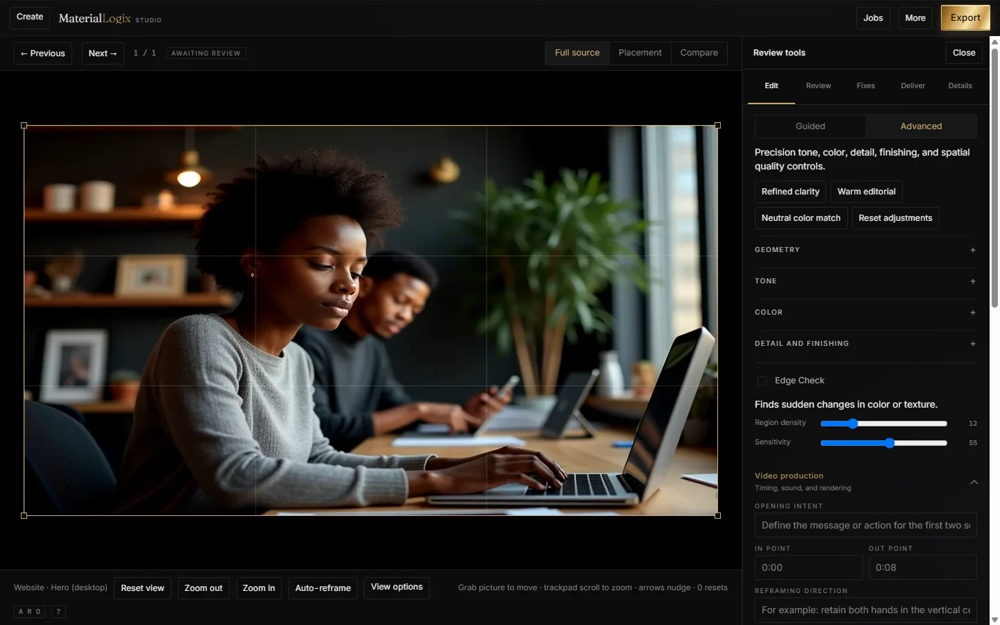

MaterialLogix Builder
Plan spaces, layouts, and environments before committing them to the real world.
In developmentIn development. No release date is committed.
Washington, DC Formed August 2026
LIBRASIDE TECHNOLOGIES owns, governs, and funds two products. SideOf is for how adults choose to connect. MaterialLogix Studio is for finishing creative work. Different customers. One operating standard.
Black-founded Washington, DC
Portfolio
Each product serves a different customer and runs on its own data. The company holds all four to the same standard.
Finish the asset. Know where it is ready to run.
Photo, Video, and Voice in one workspace that runs on your own computer.
Open MaterialLogix
Preview build released for evaluation 3 September 2026. Not general availability.
Every side of you — without giving up control.
Social, Dating, and Private are separate profiles. Each carries its own context, visibility, and boundaries.
Explore SideOf
Adults 18+. Conditional beta target 3 October 2026, Washington, DC.
Plan spaces, layouts, and environments before committing them to the real world.
In developmentIn development. No release date is committed.
From a sketch to a tech pack to clear production direction.
In development
Coming Winter 2026. Target, not a commitment.
Our standard
Price is one barrier. Complexity, privacy, and lost control are the others. Most products ask a person to accept all four before they can do anything useful.
We take the opposite position. The system carries the complexity. The person keeps the choice.
Power without the learning curve.
Privacy and security are design decisions, not settings.
Premium capability without punishment pricing.
Your work, your data, and your choices stay closer to you.
Our story
The products started with problems Kevin Baker ran into himself. Creative tools that scattered the work. Connection platforms that did not feel safe enough. Systems that made ordinary tasks harder than they needed to be.


A wider door
LibraSide is Black-founded and Washington, DC built. The goal is not to make premium technology ordinary. It is to make the door into it wider.
Governance
LIBRASIDE TECHNOLOGIES LLC is a District of Columbia limited liability company, formed 24 August 2026 and member-managed. The standards the products run on — brand, privacy, security, release, and finance — are controlled documents. Each has an owner, an approval, and a review date.
Status as of 3 September 2026
MaterialLogix Studio has a non-production preview build available for evaluation. SideOf is a pre-launch guarded-beta candidate. Neither product is generally available, and the company reports no paying customers. Grant programs and other non-dilutive sources are the company's current external-capital path.
Board, lender, and grant diligence materials are maintained in a controlled data room. Request access
Founder
Kevin Baker is a Washington, DC product founder whose work starts with a practical frustration: too many tools fragment a person's intent when the job should be getting finished.
His background spans hands-on product development, retail operations, grooming and pet-supply operations, and apparel development. Through LIBRASIDE TECHNOLOGIES he applies one operating standard to two different products — SideOf for human connection, MaterialLogix Studio for creative finishing.
kevinbaker@librasidetechnologies.comPartnerships, press, and grant programs